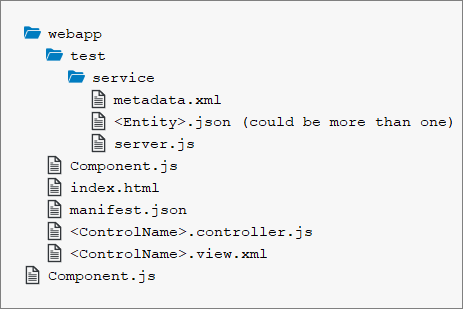

You have already gone through the following tutorials:
In addition, you need some background knowledge about OData and annotations that you can find here: http://www.sap.com/protocols/SAPData.
The smart controls require a default OData model, and named models are not supported.
You need a web server to host the files that are created in the tutorial steps, and you need the relevant SAPUI5 libraries, of course.
Please note that for each step there is a separate folder with its own copy of the files used.
For each step we will create the following files:
In some steps, additional files
are needed. They will be explained in those steps. Since many of these files are
almost identical from step to step, we show their content here but only briefly
point to interesting points in these files if necessary. Please refer to the
Walkthrough tutorial for further details on the general
setup and the content of the outer Component.js file (the top-level
file on the same level as the webapp folder) in which we define that the
index.html will be shown in an iFrame.
<!DOCTYPE html>
<html>
<head>
<meta charset="utf-8">
<title>SmartControls</title>
<script id="sap-ui-bootstrap"
src="../../../../../../../../../resources/sap-ui-core.js"
data-sap-ui-theme="sap_belize"
data-sap-ui-libs="sap.m, sap.ui.comp"
data-sap-ui-bindingSyntax="complex"
data-sap-ui-compatVersion="edge"
data-sap-ui-preload="async"
data-sap-ui-resourceroots='{
"sap.ui.demo.smartControls": "./"
}'>
</script>
<script>
sap.ui.getCore().attachInit(function() {
sap.ui.require([
"sap/ui/demo/smartControls/test/service/server"
], function(server) {
server.init();
new sap.ui.core.ComponentContainer({
name: "sap.ui.demo.smartControls",
height: "100%"
}).placeAt("content");
});
});
</script>
</head>
<body class="sapUiBody" id="content">
</body>
</html>In
this index file, you will recognize that we reference the library
sap.ui.comp since this is the main library for the smart
controls. This index.html file references the
Component.js (through the name: "sap.ui.demo.smartControls")
which always looks like this:
sap.ui.define([
"sap/ui/core/UIComponent"
], function(UIComponent) {
"use strict";
return UIComponent.extend("sap.ui.demo.smartControls.Component", {
metadata: {
manifest: "json"
}
});
});
In
the Component.js file we use the manifest.json
file.
{
"_version": "1.8.0",
"sap.app": {
"id": "sap.ui.demo.smartControls",
"type": "application",
"title": "SAPUI5 Smart Controls",
"description": "A simple app that explains the most important concepts of smart controls in SAPUI5",
"applicationVersion": {
"version": "1.0.0"
},
"dataSources": {
"mainService": {
"uri": "/here/goes/your/serviceUrl/",
"type": "OData",
"settings": {
"odataVersion": "2.0"
"localUri": "localService/metadata.xml"
}
}
}
},
"sap.ui": {
"technology": "UI5"
},
"sap.ui5": {
"rootView": {
"viewName": "sap.ui.demo.smartControls.SmartField",
"type": "XML"
"async": true
},
"dependencies": {
"minUI5Version": "1.30",
"libs": {
"sap.m": {},
"sap.ui.comp": {}
}
},
"models": {
"": {
"dataSource": "mainService",
"settings": {
"defaultBindingMode": "TwoWay"
}
}
}
}
}In
the manifest.json file we define the rootView and
also the model of the application. Please note that the TwoWay
binding mode ensures that an input validation is done automatically based on the
metadata.
The last file that we wish to list here is the
server.js:
sap.ui.define([
"sap/ui/core/util/MockServer"
], function (MockServer) {
"use strict";
return {
init: function () {
// create
var oMockServer = new MockServer({
rootUri: "/here/goes/your/serviceUrl/"
});
// configure
MockServer.config({
autoRespond: true,
autoRespondAfter: 1000
});
// simulate
var sPath = sap.ui.require.toUrl("sap/ui/demo/smartControls/test/service");
oMockServer.simulate(sPath + "/metadata.xml", sPath);
// start
oMockServer.start();
}
};
});In
this file we define the MockServer handling the server
requests.
You might notice the rather flat setup of the files that is different from the
setup propagated in the Walkthrough tutorial where the
Model-View-Controller paradigm is reflected in the folder
structure. We have chosen the flat setup for this tutorial since our examples
all have exactly one single file for the view and one single file
for the controller. Additional folders would add a complexity that we would like
to avoid.